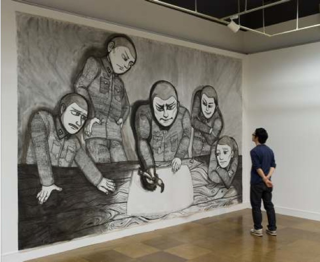

Title:
Japanese figurative paintings
Year:
2010
I went to the National Museum of art in Osaka the other day, and saw a lot of inspiring stuff. The exhibition that was on was titled "Garden of Painting—Japanese Art of the 00s":
To commemorate the fifth anniversary of the National Museum of Art, Osaka's relocation from Expo Park to Nakanoshima, in the heart of Osaka, we are pleased to present a special exhibition titled "Garden of Painting—Japanese Art of the 00s." In this event, we focus on new figurative painting from the last decade to showcase the vibrant activities of a younger generation of Japanese artists.
In this exhibition, we present some 200 works by 28 artists, including recent and new works, throughout the museum's exhibition spaces in the second- and third-floor basements. Among these are the unforgettable O Jun with his witty portraits and iconography; Kobayashi Takanobu, who depicts landscapes and people shrouded in a distinctive kind of light; artists from the preceding generation such as Nara Yoshitomo, who is known for his pictures of young girls with incisive looks; up-and-coming artists like Goto Yasuka, Sakamoto Natsuko, and Atsuchi Tomoko, who were born in the 1980s; and Kusama Yayoi, who has in recent years been exploring new frontiers in painting through her use of line drawings.
Here's a list of the things I liked the most:
- Goto Yasuka, 'yosegaki'
- Nara Yoshitomo, 'the little judge', 'agent orange', 'after the acid rain'
{kind=link}
{kind=link}
- Hanazawa Takeo, 'winter garden', 'mikrokozmosz'
{kind=link}
- Ikeda Mitsuhiro, 'untitled'
 - Kato Mika, 'canaria', 'cloud'
- Kato Mika, 'canaria', 'cloud'
{kind=link}
- Kobayashi Takanobu, 'forest', 'sunbather 8', 'pillow'
 - Ozawa Sakae, 'Zauber/magic', 'the secret of the world tastes like honey', 'i always wanted to cry', 'the world becomes dream, the dream becomes world'
- Ozawa Sakae, 'Zauber/magic', 'the secret of the world tastes like honey', 'i always wanted to cry', 'the world becomes dream, the dream becomes world'
{kind=link}
- Makishima Takeshi, 'dragonfly', 'replay', 'in motion', 'helios'
{kind=link}
- Sugito Hiroshi, 'quadII'
{kind=link}
- Machida Kumi, 'gentle people', 'rocking horse'
- Aida Makoto, 'picture of waterfall'
{kind=link}
- Hoki Nobuya, 'untitled'
{kind=link}
- Sakamoto Natsuko, 'tiles', 'tiles, shower'
{kind=link}
{kind=link}
Cite this article:
See also:
2010
Japanese figurative paintings.
Michele Pasin
Blog entry on www.michelepasin.org ., Mar 2010.
Japanese Terror in Sancasan.
Michele Pasin
Blog entry on www.michelepasin.org ., Jan 2010.